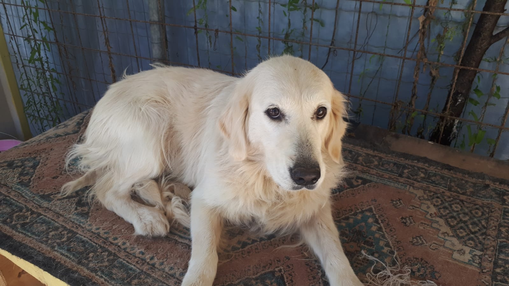
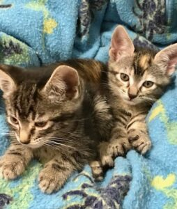
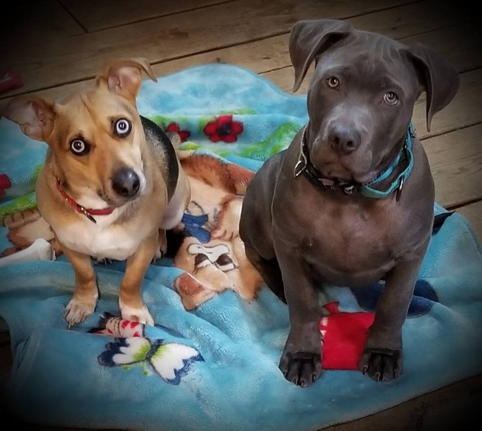
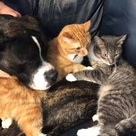
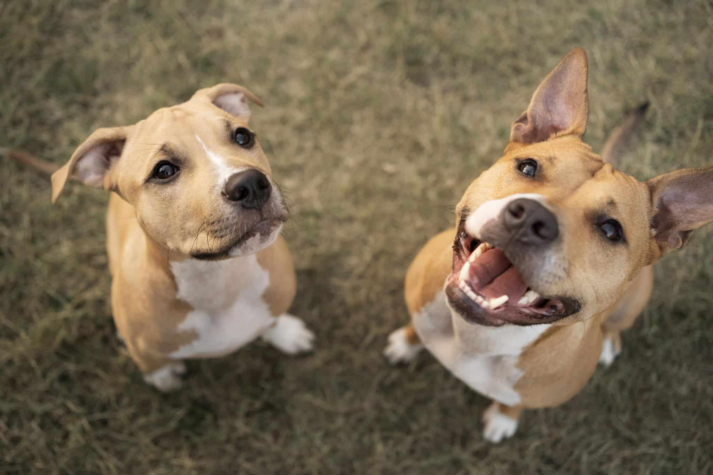

Bienvenido!
En este sitio web, puedes encontrar y publicar avisos de adopción de mascotas. Navega a través de las diferentes secciones para ver los listados disponibles, agregar nuevos avisos o consultar estadísticas sobre las adopciones.
Últimos 5 avisos publicados
| Fecha de publicacion | Comuna | Sector | Cantidad, tipo y edad | Foto |
|---|---|---|---|---|
| 2024-06-01 | Santiago | Beauchef | 1 perro, 3 años |  |
| 2024-05-28 | Providencia | Los leones | 2 gatos, 1 mes |  |
| 2024-05-25 | Ñuñoa | Irarrázaval | 2 perros, 1 año |  |
| 2024-05-20 | San Miguel | El Llano | 1 perro, 2 gatos. 3 años, 2 años y 3 años |  |
| 2024-05-15 | Puente Alto | Santa Rosa | 2 perros, 3 años y 2 añps |  |